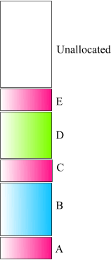
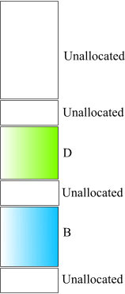
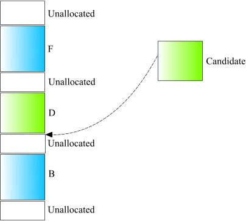
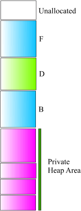
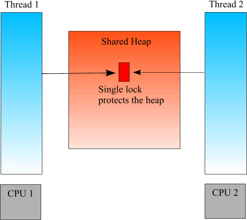
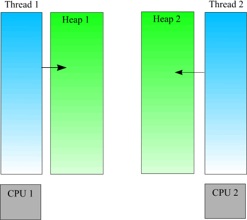

Optimization of memory allocations
Anatoliy Kuznetsov. 2003.
Introduction
STL introduced mechanism called "allocator" used to create additional level of abstraction for STL containers which encapsulates information about memory model. This abstraction is infrequently used by developers, but can provide a lot of opportunities for performance optimization. There are several memory related headaches developers struggling for ages. One of them is memory fragmentation; another is bottleneck in multithreaded environment with one shared heap. To address this issues BitMagic library makes use of allocators.
Heap Fragmentation
When program starts running the runtime library forms a region of memory called "heap". In the simplest case heap looks like a solid unused block of memory.
When program works it allocates blocks of memory.

Fig. 1
What we see here is allocated and free memory all placed together and new portions are allocated from one big pool of free memory.
Over the time our program will free some memory and the overall heap picture changes.

Fig. 2
As we see our heap quickly becomes fragmented: free and allocated regions are becoming mixed. Technically runtime heap manager is designed to work with situations like this, but such a universalism is coming with a price and in many cases it is low performance. Heap manager needs to maintain lists of free blocks and every time we try to allocate it needs to scan available blocks looking for a suitable candidate. Over the time for long lasting server processes it can result in performance degradation.

Fig. 3
Now we cannot even place the candidate block even if we have sufficient free space. Our heap is too fragmented. In this case heap manager can either reject the allocation request by returning NULL or extend the heap by allocating more memory pages from the operating system. Allocation failure means serious consequences for the application because we not always have an escape root and a lot of programs in this situation will crash or gracefully terminate which for any practical purpose can be seeing as a special form of crash. Heap increase means that overall application image grows eating up resources from over running programs.
In a typical C++ program where objects are created and destroyed all the time the problems looks unsolvable but careful resource planning can be an improvement. If we get back to Fig.1 we can notice that our exemplary program often allocates blocks of a certain uniform size (in our example blocks A, C and E). This regularity can be used to reduce the runtime heap manager overhead.

Fig. 4
If application knows that during it's lifetime it is supposed to allocate number of equally sized blocks it can allocate in bulk by one big block and create simple custom heap, which will manage allocation more efficiently. In this case our private heap will also eventually be fragmented, but the algorithm of searching for a free candidate is much simpler. In this case the address of the free-list header becomes a clearly recognizable constant.
The drawback of the method is that we need to predict the peak maximum number of the block we need and allocate it all at once. It is not always possible or affordable so in real life the private heap can take form of several big blocks allocated and deallocated on demand. Another alternative ad-hoc design is that program allocates one private heap block serving the average consumption and when it is full redirects allocations to the main heap. In this case we optimize for the most frequent allocation scenario.
Many C++ programs also solve this problem by maintaining per-class free lists. This is a step in right direction, but this solution is incomplete and does not really fight the fragmentation problem, since every instance maintains its own free list and inter-object optimization becomes problematic. If free lists are shared between instances it makes much more difficult to create thread-safe containers and classes are becoming dependent on synchronization primitives.
The best design was proposed by STL where memory allocation logic was separated into a special interface named "allocator". STL containers can be externally parameterized with allocators without any change in the source code. BM library shares the same approach not trying to optimize memory management by itself. Just like STL it delegates all memory related needs to an external interface.
Take a look at Boost Pool library addressing the same problem of memory allocations.
Memory allocation in multithreaded environments
Another performance pile of performance related questions is coming from the multithreaded (MT), concurrent nature of the modern software. To achieve good scalability different threads of execution should not wait while some shared resource becomes available for the thread. Heap management infrastructure is one of the most essential shared resources.

Fig. 5
Many multithreaded applications that use the standard memory allocation routines pay a significant performance penalty when running on a multiprocessor machine. This is due to the serialization used by the default heap. On a multiprocessor machine, more than one thread may try to allocate memory simultaneously. One thread will block on the critical section guarding the heap. The other thread must then signal the critical section when it is finished to release the waiting thread. Moreover single threaded allocator design can exacerbate false sharing, when different processors can share cache lines.
On two and more processors machine heap serialization procedure can become a serious problem. In this article you can find test results showing dual processor machine working slower than a single processor contender because of the heap serialization burden.
All this makes one concurrent heap (e.g. B-tree) too expensive.

Fig. 6
Pure private heaps design suggests using one heap per thread and avoiding heap contention. Both Unix and Windows provide API to create and manipulate thread local storage.
Interesting, that MT model with separate heaps very well corresponds to multitasking, where programs are completely separated by OS and heap contention is impossible by definition. It means that multitasking architectures are not obsolete and should not be automatically abandoned in favor of more fashionable multi-threading. Multitasking applications can be easily converted to work in cluster environments, workstation networks or any other environment where it is profitable to employ what is called 'embarrassingly parallel computation': the program consists of fragments which are too 'embarrassed' to talk to each other and hence can run almost without contention.
Allocators for BitMagic library
Standard STL allocator is interface that manages allocation and freeing for arrays of objects of a certain type. It goes along with the concept of a typical STL container specialized to manipulate only one type. BM library internally employs several different data structures to represent bitsets, which makes one allocator insufficient.
BitMagic defines new template class mem_alloc working as an adapter between STL style allocators and all other BitMagic types. Currently BM uses two allocators: one for pointers and another one for arrays of 32-bit unsigned integers used as bit blocks. (Actually BitMagic uses both 32-bit integers and 16-bit short integers, but shorts can be allocated as 32-bit integers and then cast without a risk of having alignment problems.)
It was decided to use minimalist version of STL allocator requiring only two static functions allocate and deallocate. BitMagic defines the default implementation that does not use STL but rather pedestrian malloc/free functions.
class block_allocator
{
public:
static bm::word_t* allocate(size_t n, const void *)
{
return (bm::word_t*) ::malloc(n * sizeof(bm::word_t));
}
static void deallocate(bm::word_t* p, size_t)
{
::free(p);
}
};
class ptr_allocator
{
public:
static void* allocate(size_t n, const void *)
{
return ::malloc(n * sizeof(void*));
}
static void deallocate(void* p, size_t)
{
::free(p);
}
};
By default BitMagic is ratrher independent from STL and even does not use new/delete operators (well, not true in the most recent versions). So it can be easily integrated in any project using or not using STL, or redefining new/delete operators (Microsoft MFC for example).
Custom bvector<> allocator checklist
- implement bm::word_t allocator and void* allocator.
- define new BM compatible allocator adapter:
typedef mem_alloc - use the allocator adapter as the template argument for
bm::bvector:
typedef bm::bvectorbvect;
BitMagic library vision of bitsets is very different from how STL implements it. BitMagic does not allocate one big block of memory for all bitset at once.
It uses postponed allocation and frees bitset blocks when it is possible. BitMagic also uses DGAP alternative GAP based bitset representation to reduce memory footprint.
Expected result is that it allocates and deallocates memory blocks quite often.
To alleviate the consequences like heap fragmentation BM library uses fixed-size blocks of memory so you can easily use any of the described heap management techniques.
For the block allocator sizes can be 2048 (size of a bit block (SET_BLOCK_SIZE)) and as defined in bm::gap_len_table (divided by 2) (128, 256, 512, 1280) or alternative bm::gap_len_table_min (32, 96, 128, 512).
Pointer allocator uses the only size of 256 (SET_ARRAY_SIZE). All the sizes are not in bytes but in units of allocation, as it is defined by the STL allocator requirements.
Current version of BM libarary provides only default allocator redirecting all calls to the default malloc/free.
A very simple example of how to create allocators for bm::bvector<>.